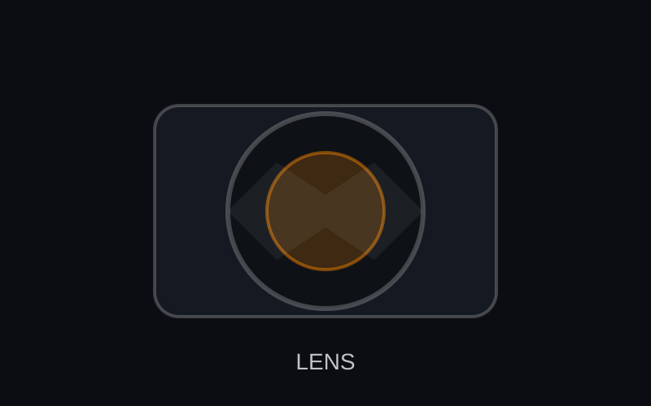

Фиксирани обективи
Остри, леки и отлични за портрети при слаба светлина.
Отдел „Обективи“
Обективите създават визията: контраст, острота, флеър и боке. Бърза бленда (например f/1.8) пропуска повече светлина, но помнете: дълбочината на рязкост става по-малка.

Остри, леки и отлични за портрети при слаба светлина.
Гъвкави фокусни разстояния за пътувания, събития и бързи промени.
Близък фокус за продуктови снимки, насекоми и детайли на текстури.
Спорт, диви животни и „компресия“ на фона.
| Тип | Пример | Приложение | Цена |
|---|---|---|---|
| Фиксиран | 35mm f/1.8 | Street и портрети в среда | $499 |
| Зуум | 24–70mm f/2.8 | Събития и сватби | $1,899 |
| Телефото | 70–200mm f/2.8 | Спорт и сцена | $2,199 |
| Макро | 100mm f/2.8 Macro | Продуктова и детайлна фотография | $899 |
Използвайте & за да изписвате „бленда & затвор“, използвайте — за тире и неразривен интервал като 24 mm.